Diagnostics, model selection, troubleshooting
Source:vignettes/vignette-06-diagnostics.Rmd
vignette-06-diagnostics.Rmd
library(demografr)
library(slendr)
init_env()
#> The interface to all required Python modules has been activated.
library(future)
plan(multisession, workers = availableCores())
SEED <- 42
set.seed(SEED)⚠️⚠️⚠️
The demografr R package is still under active development!
⚠️⚠️⚠️
Let’s return to our first example. However, this time, imagine that we don’t really know which of the three following phylogenetic relationships is the one that captures the features of our data best, perhaps with different sources of evidence being consistent with each one of them so we want to consider all three in our modeling (as always, this is supposed to be a hypothetical example for demonstration purposes). These models differ both in terms of tree topology of the population relationships as well as in the gene flow, and we want to perform model selection.

For completeness, here is again our observed data which was, in reality, generated by a hidden evolutionary process whose parameters we’re trying to infer by doing ABC:
- Nucleotide diversity in each population:
observed_diversity <- read.table(system.file("examples/basics_diversity.tsv", package = "demografr"), header = TRUE)
observed_diversity#> set diversity
#> 1 A 8.030512e-05
#> 2 B 3.288576e-05
#> 3 C 1.013804e-04
#> 4 D 8.910909e-05- Pairwise divergence d_X_Y between populations X and Y:
observed_divergence <- read.table(system.file("examples/basics_divergence.tsv", package = "demografr"), header = TRUE)
observed_divergence#> x y divergence
#> 1 A B 0.0002378613
#> 2 A C 0.0002375761
#> 3 A D 0.0002379385
#> 4 B C 0.0001088217
#> 5 B D 0.0001157056
#> 6 C D 0.0001100633- Value of the following -statistic:
observed_f4 <- read.table(system.file("examples/basics_f4.tsv", package = "demografr"), header = TRUE)
observed_f4#> W X Y Z f4
#> 1 A B C D -3.262146e-06We will again bind them into a list:
observed <- list(
diversity = observed_diversity,
divergence = observed_divergence,
f4 = observed_f4
)Three competing models
First, in order to perform model selection, we need to specify models themselves. We do this by defining three separate slendr functions, each of them encoding the three population relationships from the diagrams above. Note that we’re not trying to infer the time of gene flow, for simplicity, but we do fix the gene flow event to different times (again, reflected in the alternative model sketches above), just to make the models stand out from one another:
modelX <- function(Ne_A, Ne_B, Ne_C, Ne_D, T_1, T_2, T_3, gf) {
A <- population("A", time = 1, N = Ne_A)
B <- population("B", time = T_1, N = Ne_B, parent = A)
C <- population("C", time = T_2, N = Ne_C, parent = B)
D <- population("D", time = T_3, N = Ne_D, parent = C)
gf <- gene_flow(from = B, to = C, start = 9000, end = 9301, rate = gf)
model <- compile_model(
populations = list(A, B, C, D), gene_flow = gf,
generation_time = 1, simulation_length = 10000,
direction = "forward"
)
samples <- schedule_sampling(
model, times = 10000,
list(A, 50), list(B, 50), list(C, 50), list(D, 50),
strict = TRUE
)
return(list(model, samples))
}
modelY <- function(Ne_A, Ne_B, Ne_C, Ne_D, T_1, T_2, T_3, gf) {
A <- population("A", time = 1, N = Ne_A)
B <- population("B", time = T_1, N = Ne_B, parent = A)
C <- population("C", time = T_2, N = Ne_C, parent = A)
D <- population("D", time = T_3, N = Ne_D, parent = A)
gf <- gene_flow(from = A, to = B, start = 9000, end = 9301, rate = gf)
model <- compile_model(
populations = list(A, B, C, D), gene_flow = gf,
generation_time = 1, simulation_length = 10000,
direction = "forward"
)
samples <- schedule_sampling(
model, times = 10000,
list(A, 50), list(B, 50), list(C, 50), list(D, 50),
strict = TRUE
)
return(list(model, samples))
}
modelZ <- function(Ne_A, Ne_B, Ne_C, Ne_D, T_1, T_2, T_3, gf) {
A <- population("A", time = 1, N = Ne_A)
B <- population("B", time = T_1, N = Ne_B, parent = A)
C <- population("C", time = T_2, N = Ne_C, parent = A)
D <- population("D", time = T_3, N = Ne_D, parent = C)
gf <- gene_flow(from = C, to = D, start = 9000, end = 9301, rate = gf)
model <- compile_model(
populations = list(A, B, C, D), gene_flow = gf,
generation_time = 1, simulation_length = 10000,
direction = "forward"
)
samples <- schedule_sampling(
model, times = 10000,
list(A, 50), list(B, 50), list(C, 50), list(D, 50),
strict = TRUE
)
return(list(model, samples))
}Now, let’s specify priors using demografr’s templating syntax. This saves us a bit of typing, making the prior definition code a bit more consise and easier to read:
priors <- list(
Ne... ~ runif(100, 10000),
T_1 ~ runif(1, 4000),
T_2 ~ runif(3000, 9000),
T_3 ~ runif(5000, 10000),
gf ~ runif(0, 1)
)Let’s also put together a list of tree-sequence summary functions and observed summary statistics:
compute_diversity <- function(ts) {
samples <- ts_names(ts, split = "pop")
ts_diversity(ts, sample_sets = samples)
}
compute_divergence <- function(ts) {
samples <- ts_names(ts, split = "pop")
ts_divergence(ts, sample_sets = samples)
}
compute_f4 <- function(ts) {
samples <- ts_names(ts, split = "pop")
A <- samples["A"]; B <- samples["B"]
C <- samples["C"]; D <- samples["D"]
ts_f4(ts, A, B, C, D)
}
functions <- list(
diversity = compute_diversity,
divergence = compute_divergence,
f4 = compute_f4
)Let’s validate the ABC setup of all three models – this is an
important check that the slendr model functions are defined
correctly (we set quiet = TRUE to surpress writing out the
full log output):
validate_abc(modelX, priors, functions, observed, quiet = TRUE,
sequence_length = 1e6, recombination_rate = 1e-8)
validate_abc(modelY, priors, functions, observed, quiet = TRUE,
sequence_length = 1e6, recombination_rate = 1e-8)
validate_abc(modelZ, priors, functions, observed, quiet = TRUE,
sequence_length = 1e6, recombination_rate = 1e-8)With that out of the way, we can proceed with generating simulated
data for inference using all three models. What we’ll do is perform
three runs and save them into appropriately named variables
dataX, dataY, and dataZ:
dataX <- simulate_abc(modelX, priors, functions, observed, iterations = 10000,
sequence_length = 10e6, recombination_rate = 1e-8, mutation_rate = 1e-8)
dataY <- simulate_abc(modelY, priors, functions, observed, iterations = 10000,
sequence_length = 10e6, recombination_rate = 1e-8, mutation_rate = 1e-8)
dataZ <- simulate_abc(modelZ, priors, functions, observed, iterations = 10000,
sequence_length = 10e6, recombination_rate = 1e-8, mutation_rate = 1e-8)The total runtime for the ABC simulations was 0 hours 55 minutes 51 seconds parallelized across 96 CPUs.
abcX <- run_abc(dataX, engine = "abc", tol = 0.01, method = "neuralnet")#> Warning: All parameters are "none" transformed.
abcY <- run_abc(dataY, engine = "abc", tol = 0.01, method = "neuralnet")#> Warning: All parameters are "none" transformed.
abcZ <- run_abc(dataZ, engine = "abc", tol = 0.01, method = "neuralnet")#> Warning: All parameters are "none" transformed.Cross-validation
Before doing model selection, it’s important to perform cross-validation to answer the question whether our ABC setup can even distinguish between the competing models. Without having the power to do this, trying to select the best model wouldn’t make much sense.
This can be done using demografr’s
cross_validate() function which is built around
abc’s own function cv4postpr(). We will not go
into too much detail, as this function simply calls
cv4postpr() under the hood, passing to it all specified
function arguments on behalf of a user to avoid unnecessary manual data
munging (creating the index vector, merging the summary
statistics into sumstat parameter, etc.). For more details,
read section “Model selection” in the vignette
of the abc R package.
The one difference between the two functions is that
cross_validate() removes the need to prepare character
indices and bind together summary statistic matrices from different
models—given that demografr’s ABC output objects track all this
information along in their internals, this is redundant, and you can
perform cross-validation of different ABC models simply by calling
this:
models <- list(abcX, abcY, abcZ)
cv_selection <- cross_validate(models, nval = 100, tol = 0.01, method = "neuralnet")If we print out the result, we get a quick summary of the resulting confusion matrices and other diagnostic information:
cv_selection#> Confusion matrix based on 100 samples for each model.
#>
#> $tol0.01
#> modelX modelY modelZ
#> modelX 95 0 5
#> modelY 0 98 2
#> modelZ 0 1 99
#>
#>
#> Mean model posterior probabilities (neuralnet)
#>
#> $tol0.01
#> modelX modelY modelZ
#> modelX 0.8879 0.0592 0.0529
#> modelY 0.0467 0.9336 0.0197
#> modelZ 0.0097 0.0237 0.9667
#>
#> $conf.matrix
#> $conf.matrix$tol0.01
#> modelX modelY modelZ
#> modelX 95 0 5
#> modelY 0 98 2
#> modelZ 0 1 99
#>
#>
#> $probs
#> $probs$tol0.01
#> modelX modelY modelZ
#> modelX 0.887923101 0.05917987 0.05289703
#> modelY 0.046703390 0.93360253 0.01969408
#> modelZ 0.009653603 0.02368677 0.96665963Similarly, you can use the plot() function to visualize
the result. This function, yet again, internally calls abc’s
own plotting method internall, with a bonus option to save a figure to a
PDF right from the plot() call (useful when working on a
remote server):
plot(cv_selection)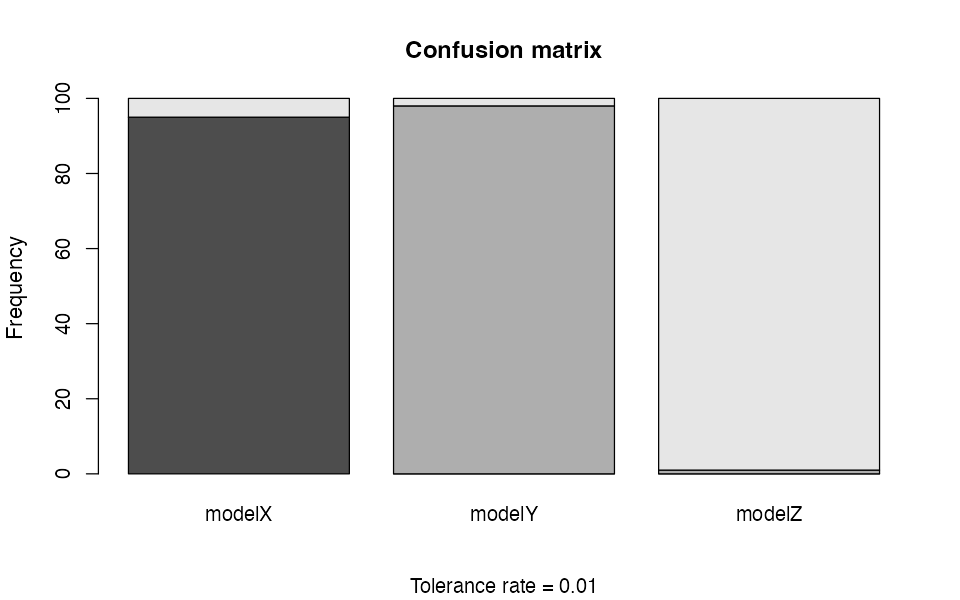
Because we have three models, each of the three barplots shows how often were summary statistics sampled from each model classified as likely coming from one of the three models. In other words, with absolutely perfect classification, each barplot would show just one of the three colors. If a barplot (results for one model) shows multiple colors, this means that some fraction of simulated statistics from that model was incorrectly classified as another model. Again, for more detail on interpretation, caveats, and best practices, please consult the abc R package vignette and a relevant statistical textbook.
The confusion matrices and the visualization all suggest that ABC can distinguish between the three models very well. For instance, modelX has been classified correctly in 95 simulations out of the total of 100 cross-validation simulations, with an overall misclassification rate for all models of only 2.7%.
Model selection
Armed with confidence in the ability of ABC to correctly identify the
correct model based on simulated data, we can proceed to selection of
the best model for our empirical data set. This can be done with the
function select_model() which is demografr’s
convenience wrapper around abc’s own function
postpr:
models <- list(abcX, abcY, abcZ)
modsel <- select_model(models, tol = 0.03, method = "neuralnet")We can make a decision on the model selection by inspecting the
summary() of the produced result:
modsel#> Call:
#> abc::postpr(target = parts$target, index = parts$index, sumstat = parts$sumstat,
#> tol = tol, method = "neuralnet")
#> Data:
#> postpr.out$values (900 posterior samples)
#> Models a priori:
#> modelX, modelY, modelZ
#> Models a posteriori:
#> modelX, modelY, modelZ
#>
#> Proportion of accepted simulations (rejection):
#> modelX modelY modelZ
#> 0.8711 0.0056 0.1233
#>
#> Bayes factors:
#> modelX modelY modelZ
#> modelX 1.0000 156.8000 7.0631
#> modelY 0.0064 1.0000 0.0450
#> modelZ 0.1416 22.2000 1.0000
#>
#>
#> Posterior model probabilities (neuralnet):
#> modelX modelY modelZ
#> 1 0 0
#>
#> Bayes factors:
#> modelX modelY modelZ
#> modelX 1.0000 332971.5882 523931.5086
#> modelY 0.0000 1.0000 1.5735
#> modelZ 0.0000 0.6355 1.0000As we can see, modelX shows the highest rate of
acceptance among all simulations. Specifically, we see that the
proportion of acceptance is 87.1%.
Similarly, looking at the Bayes factors, we see that the “modelX” is 156.8 times more likely than “modelY”, and 7.1 more likely than “modelZ”.
When the posterior probabilities are computed using a more elaborate neural network method (again, see more details in the abc vignette), we find that the probability of “modelX” is even more overwhelming. In fact, the analysis shows that it has a 100% probabiliy of being the correct model to explain our data.
But how accurate are these conclusions? Well, if we
take a peek at the slendr model which was internally
used to generate the “observed” summary statistics, we see that the
data was indeed simulated by code nearly identical to the one shown
above as modelX. When plotted, the true model looks like
this:
A <- population("A", time = 1, N = 2000)
B <- population("B", time = 2000, N = 800, parent = A)
C <- population("C", time = 6000, N = 9000, parent = B)
D <- population("D", time = 8000, N = 4000, parent = C)
gf <- gene_flow(from = B, to = C, start = 9000, end = 9301, rate = 0.1)
example_model <- compile_model(
populations = list(A, B, C, D), gene_flow = gf,
generation_time = 1,
simulation_length = 10000
)
plot_model(example_model, proportions = TRUE)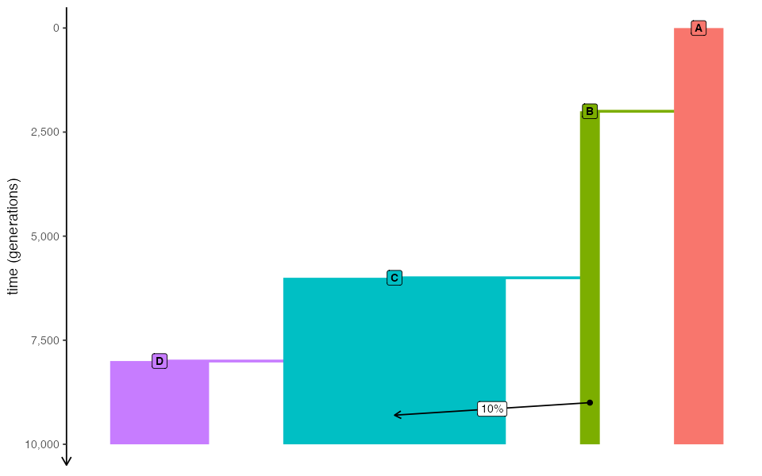
It appears that we can be quite confident in which of the three models is most compatible with the data. However, before we move on to inferring parameters of the model, we should check whether the best selected model can indeed capture the most important features of the data, which is in case of ABC represented by our summary statistics.
In order to do this, demografr provides a function call
predict() which performs posterior predictive check. Below,
we we also look at how to use functions gfit() and
gfitpca() implemented by the abc R package
itself.
Let’s start with the posterior predictive checks.
Posterior predictive checks
Link:
http://www.stat.columbia.edu/~gelman/research/published/A6n41.pdf
It is one thing to Simply speaking, when fitting a model and
estimating its parameters using ABC, we rely on a set of summary
statistics, which we assume capture the most important features of the
true model represented by the data we gathered. Performing posterior
predictive checks involves estimating the posterior distributions of the
parameters of interest from the data (i.e. doing ABC inference) –
something we’ve done above on our modelX,
modelY, and modelZ – and then sampling
parameters from these distributions and generating distributions of
simulated summary statistics from those estimated models. Then, we plot
the distributions of each of our simulated summary statistics
together with a vertical line representing the values of the
observed statistics. Naturally, only if the model can generate
statistics compatible with the values observed in real data can we
regard the model as sensible and usable for inference.
plan(multisession, workers = availableCores())
predX <- predict(abcX, samples = 1000, posterior = "unadj")
predY <- predict(abcY, samples = 1000, posterior = "unadj")
predZ <- predict(abcZ, samples = 1000, posterior = "unadj")Looking at the posterior predictive plots from the model X, we can see that the observed statistics (vertical dashed lines) fall very well within the distributions of statistics simulated from the posterior parameters of the model. This suggests that are model (simplified that it must be given the more complex reality), captures the empoirical statistics quite well:
plot_prediction(predX)#> $diversity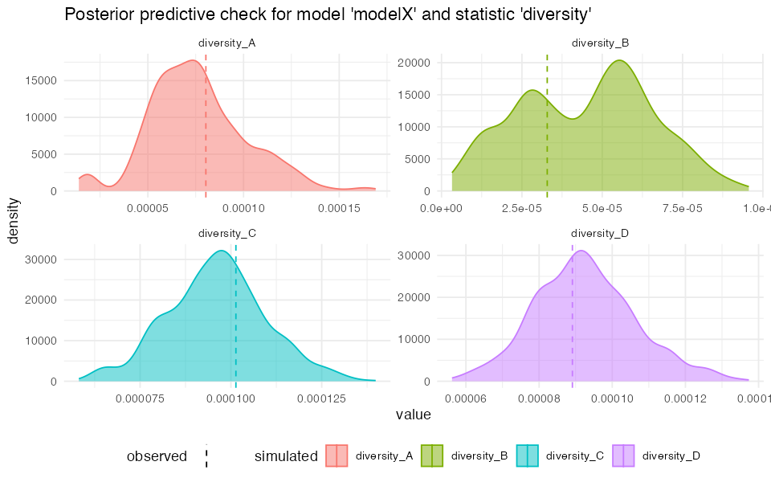
#>
#> $divergence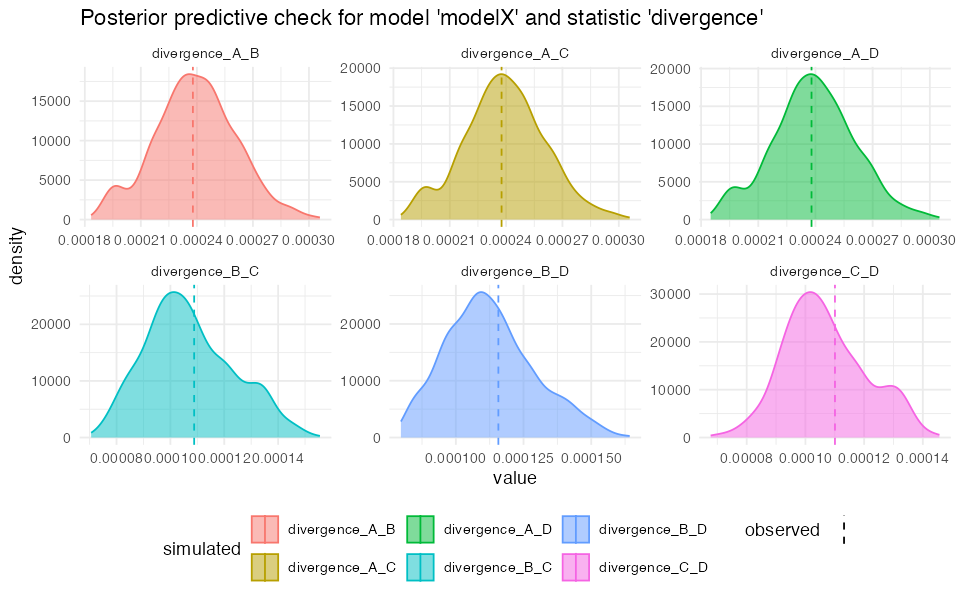
#>
#> $f4On the other hand, looking at the model Z, for instance, we see that although the gene-flow detection statistic fits rather nicely, the pairwise divergences between populations are completely from the statistics simulated from posterior distributions. This strongly suggests that the model wasn’t able to capture the features of the data.
plot_prediction(predY)#> $diversity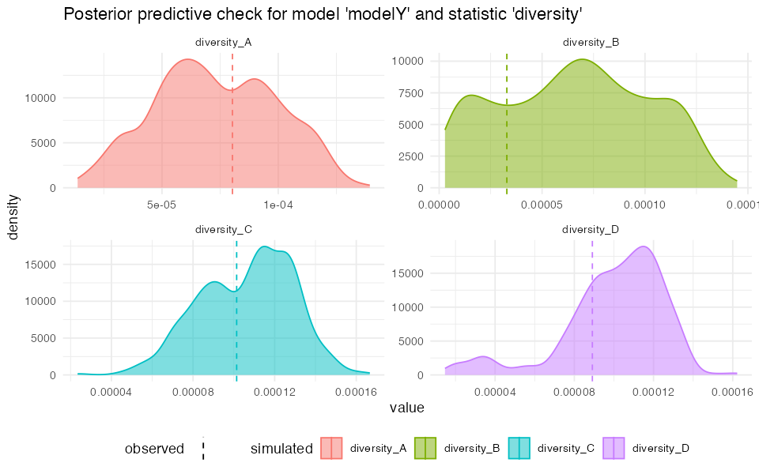
#>
#> $divergence#>
#> $f4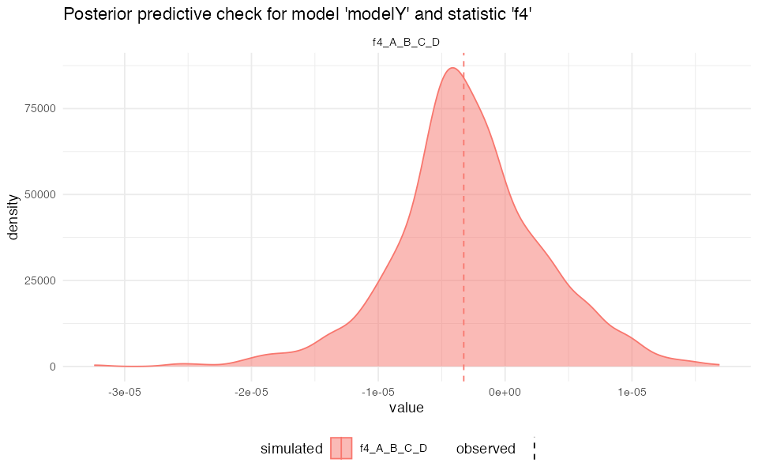
We can compare the divergences between models directly to see which model gives the most reasonable posterior predictive check results more clearly:
cowplot::plot_grid(
plot_prediction(predX, "divergence"),
plot_prediction(predY, "divergence"),
plot_prediction(predZ, "divergence"),
ncol = 1
)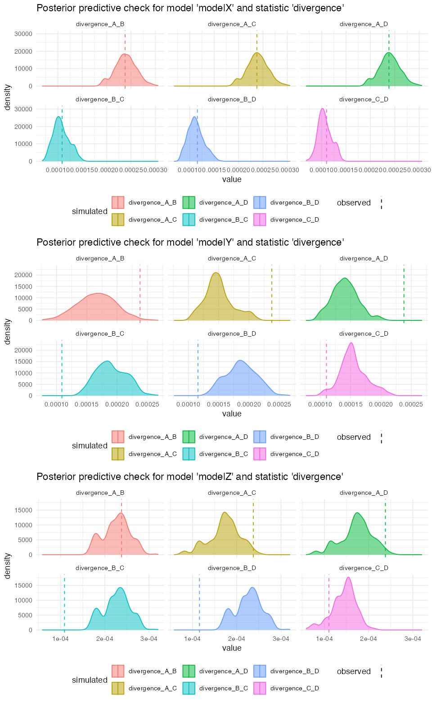
We can see that posterior predictive checks for nucleotide diversity are a little less clear as there are no extremely dramatic outliers as it’s the case for divergence above:
cowplot::plot_grid(
plot_prediction(predX, "diversity"),
plot_prediction(predY, "diversity"),
plot_prediction(predZ, "diversity"),
ncol = 1
)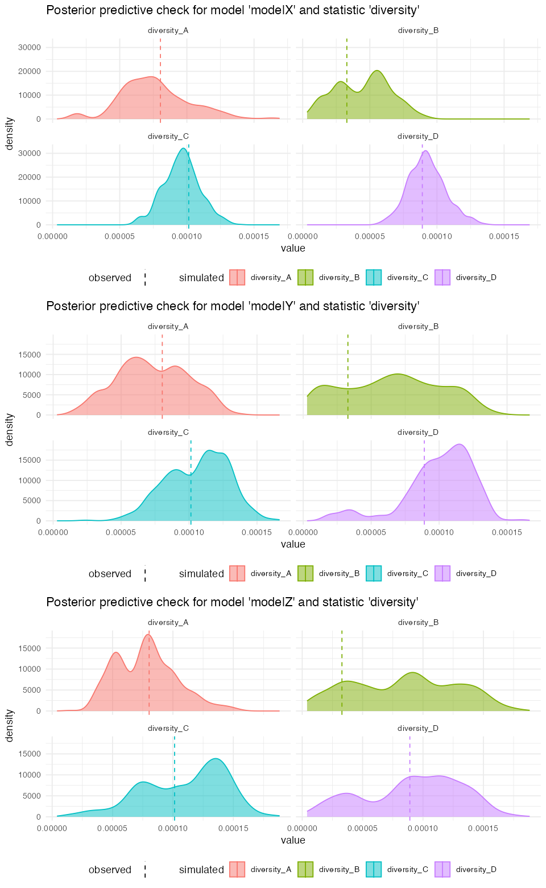
cowplot::plot_grid(
plot_prediction(predX, "f4"),
plot_prediction(predY, "f4"),
plot_prediction(predZ, "f4"),
ncol = 1
)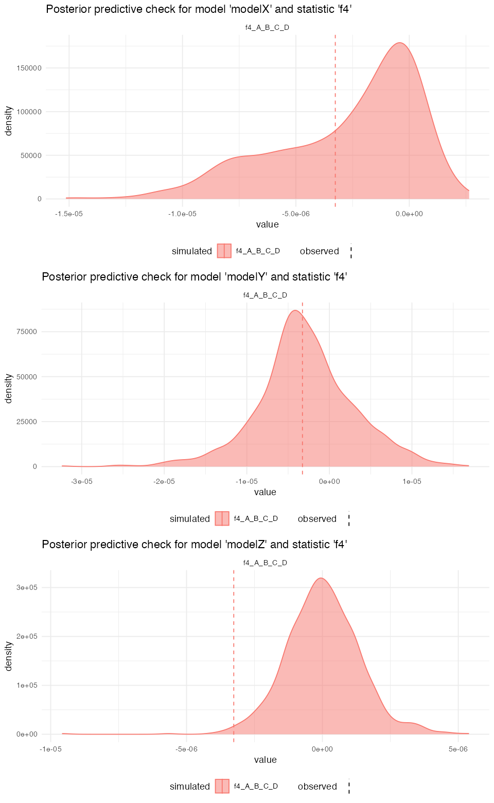
If more customization or a more detailed analyses is needed, you can also extract data from the posterior simulations themselves:
extract_prediction(predX, "diversity")#> $diversity
#> # A tibble: 4,000 × 12
#> rep T_1 T_2 T_3 gf Ne_A Ne_B Ne_C Ne_D summary stat value
#> <int> <dbl> <dbl> <dbl> <dbl> <dbl> <dbl> <dbl> <dbl> <chr> <chr> <dbl>
#> 1 1 1218. 6392. 9831. 0.0627 1573. 987. 5493. 5879. diversi… dive… 5.89e-5
#> 2 1 1218. 6392. 9831. 0.0627 1573. 987. 5493. 5879. diversi… dive… 3.98e-5
#> 3 1 1218. 6392. 9831. 0.0627 1573. 987. 5493. 5879. diversi… dive… 9.35e-5
#> 4 1 1218. 6392. 9831. 0.0627 1573. 987. 5493. 5879. diversi… dive… 9.48e-5
#> 5 2 962. 5053. 6577. 0.0747 1105. 1215. 3420. 3951. diversi… dive… 4.94e-5
#> 6 2 962. 5053. 6577. 0.0747 1105. 1215. 3420. 3951. diversi… dive… 4.98e-5
#> 7 2 962. 5053. 6577. 0.0747 1105. 1215. 3420. 3951. diversi… dive… 9.83e-5
#> 8 2 962. 5053. 6577. 0.0747 1105. 1215. 3420. 3951. diversi… dive… 1.02e-4
#> 9 3 345. 4826. 9959. 0.294 473. 679. 7349. 6138. diversi… dive… 1.62e-5
#> 10 3 345. 4826. 9959. 0.294 473. 679. 7349. 6138. diversi… dive… 2.53e-5
#> # ℹ 3,990 more rowsHowever, note that extract_prediction is a convenience
function which only unnests, reformats, and renames the list-columns
with summary statistics stored in the predictions data
frame above. You can do all the processing based on the
predictions object above.
Additional diagnostics and backwards compatibility with the abc package
As mentioned above, the functionality behind
cross_validate() is implemented by reformatting the results
of demografr simulation and inference functionality in a form
necessary to run the functions of the abc package
cv4abc() and cv4postpr() behind the scenes – a
task that normally requires a significant amount of potentially
error-prone bookkeeping on part of the user.
In addition to demografr’s own function
predict() which implements posterior predictive checks, the
abc package provides additional functionality for evaluating
the quality of the fit of an ABC model to the data, namely
gfit() and gfitpca(). In this section we
demonstrate how this functionality (and potentially other future
abc functions) can be applied on demografr data with
very little additional work.
First, demografr provides a function unpack()
which – when applied on an object generated either by
simulate_abc() or run_abc() – unpacks
the object encapsulating all information describing the simulation and
inference which produced it, into individual components with names
matching the “low-level” function arguments of all relevant functions of
the anc package. This includes gfit() and
gfitpca() mentioned above, but also functions
cv4abc() and cv4postpr(). Here is how
unpack() works.
“Unpacking” a demografr object to low-level components used by the abc package
#> [1] "list"
names(partsX)#> [1] "sumstat" "index" "param" "target"As we can see, the unpack() function produced a list
object with several elements: sumstat, index, param, target. It’s not a
coincidence that the names of these list elements correspond to function
arguments of various diagnostic functions of the abc package.
In this way, demografr pre-generates the information required
by those functions (which normally need to be prepared manually), which
can then be run without any additional work whatsoever. For instance, we
could perform the cross-validation of the model selection using
abc’s own functionality like this.
First, because model-selection requires, well, multiple models to select from, we will unpack information from all the three models:
#> [1] "list"
names(parts)#> [1] "sumstat" "index" "param" "target"Then, we simply run cv4postpr() as we normally would,
using the information pre-generated by unpack():
library(abc) # cv4postpr() is a function from the abc R package, not demografr!#> Loading required package: abc.data#> Loading required package: nnet#> Loading required package: quantreg#> Loading required package: SparseM#> Loading required package: MASS#>
#> Attaching package: 'MASS'#> The following object is masked from 'package:slendr':
#>
#> area#> Loading required package: locfit#> locfit 1.5-9.12 2025-03-05
cv4postpr_res <- cv4postpr(index = parts$index, sumstat = parts$sumstat, nval = 10, tols = 0.01, method = "neuralnet")Unlike the result of cross_validate() above, typing out
the object cv4postpr_res will not help us, but we can get
the overview of the results by applying the function
summary():
summary(cv4postpr_res)#> Confusion matrix based on 10 samples for each model.
#>
#> $tol0.01
#> modelX modelY modelZ
#> modelX 10 0 0
#> modelY 0 10 0
#> modelZ 0 0 10
#>
#>
#> Mean model posterior probabilities (neuralnet)
#>
#> $tol0.01
#> modelX modelY modelZ
#> modelX 0.9007 0.0763 0.0230
#> modelY 0.0334 0.9627 0.0039
#> modelZ 0.0028 0.0553 0.9418As you can see, we can replicate the result of
cross_validate() for model selection by combining the
functions unpack(), cv4postpr() and
summary(). Of course, using cross_validate()
allows us to do this all in one go in a straightforward way, but the
above hopefully demonstrates that there’s no magic behind
demografr’s convenient functionality. It just streamlines the
process of ABC diagnostics and avoids unnecessary (and potentially
error-prone) data processing.
On a similar note, we can also run abc functions
gfit() and gfitpca() (as described in this
vignette) in exactly the same way. We will focus just on the code,
and leave the interpretation to the discussion in the vignette:
First, we will unpack the results of the selected best-fitting model
from the appropriate abc object obtained by the
demografr function run_abc() above:
#> [1] "list"
names(partsX)#> [1] "sumstat" "index" "param" "target"Then we use the elements of the parts list that we just created as
inputs for gfit():
library(abc) # gfit() is a function from the abc R package, not demografr!
gfitX <- gfit(target = partsX$target, sumstat = partsX$sumstat, statistic = mean, nb.replicate = 100)
plot(gfitX, main="Histogram under H0 (model X)")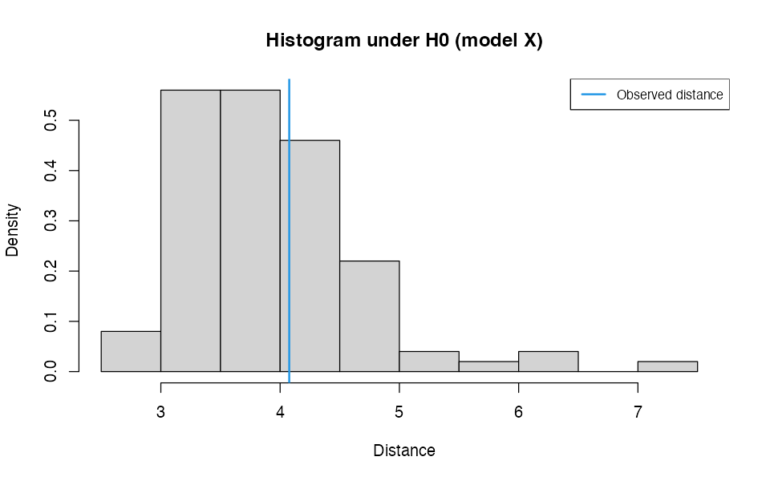
summary(gfitX)#> $pvalue
#> [1] 0.36
#>
#> $s.dist.sim
#> Min. 1st Qu. Median Mean 3rd Qu. Max.
#> 2.906 3.312 3.719 3.899 4.354 5.801
#>
#> $dist.obs
#> [1] 4.076438
partsY <- unpack(abcY)
gfitY <- gfit(target = partsY$target, sumstat = partsY$sumstat, statistic = mean, nb.replicate = 100)
plot(gfitY, main="Histogram under H0 (model Y)")
summary(gfitY)#> $pvalue
#> [1] 0.3
#>
#> $s.dist.sim
#> Min. 1st Qu. Median Mean 3rd Qu. Max.
#> 2.680 3.015 3.422 3.585 4.064 5.177
#>
#> $dist.obs
#> [1] 3.968966
partsZ <- unpack(abcZ)
gfitZ <- gfit(target = partsZ$target, sumstat = partsZ$sumstat, statistic = mean, nb.replicate = 100)
plot(gfitZ, main="Histogram under H0 (model Z)")
summary(gfitZ)#> $pvalue
#> [1] 0.12
#>
#> $s.dist.sim
#> Min. 1st Qu. Median Mean 3rd Qu. Max.
#> 2.851 3.323 3.659 3.906 4.300 6.218
#>
#> $dist.obs
#> [1] 5.032494For completeness, here is how we can run gfitpca() on
demografr results:
library(abc) # gfitpca() is a function from the abc R package, not demografr!
parts <- unpack(list(abcX, abcY, abcZ))
# this needs to be loaded because of a bug in abc dependency handling
library(locfit)
gfitpca(target = parts$target, sumstat = parts$sumstat, index = parts$index, cprob = 0.01,
xlim = c(-7, 7), ylim = c(-6, 3))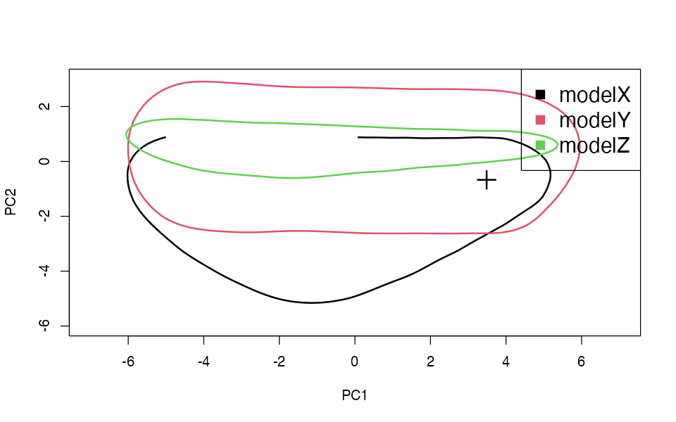
Based on the PCA, it appears that although model X and model Y are able to generate summary statistics (the areas captured by the colored “envelopes” in 2D space) compatible with the observed values (the cross), modelZ clearly cannot.
ABC cross-validation
Now we are finally at a point at which we can infer the parameters of
our model against the data. However, before we do so, we should first
check if our ABC setup can even estimate the model parameters at all. As
we have seen just above, the abc package provides a ABC
cross-validation function cv4abc() for which
demografr implements a convenient interface in the form of the
method cross_validate(). Above we have seen how to use this
method to perform model selection, if given a list of multiple ABC
objects as input. Instead, if given a single demografr ABC
object (generated by the function run_abc()), it performs
ABC cross-validation which we can use to gauge the accuracy of ABC and
the sensitivity of the parameter estimates to the tolerance rate.
cv_abc <- cross_validate(abcX, nval = 10, tols = c(0.005, 0.01, 0.05), method = "neuralnet")
cv_abc_loclinear <- cross_validate(abcX, nval = 10, tols = c(0.005, 0.01, 0.05), method = "loclinear")
cv_abc_rejection <- cross_validate(abcX, nval = 10, tols = c(0.005, 0.01, 0.05), method = "rejection")
cv_abc#> Prediction error based on a cross-validation sample of 10
#>
#> T_1 T_2 T_3 gf Ne_A Ne_B
#> 0.005 0.15700393 0.05843837 0.14039035 0.65580894 0.02774408 0.01089499
#> 0.01 0.16195851 0.08202411 0.13016013 0.90531188 0.03675439 0.01717570
#> 0.05 0.16185026 0.15266352 0.18059946 1.39279417 0.04178526 0.02799269
#> Ne_C Ne_D
#> 0.005 0.23648371 0.28755836
#> 0.01 0.39270295 0.12915743
#> 0.05 0.88447623 0.25976113
plot(cv_abc)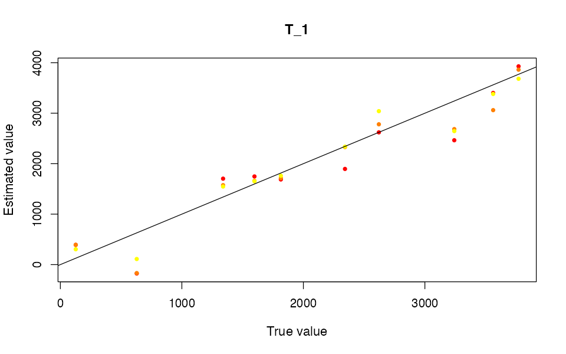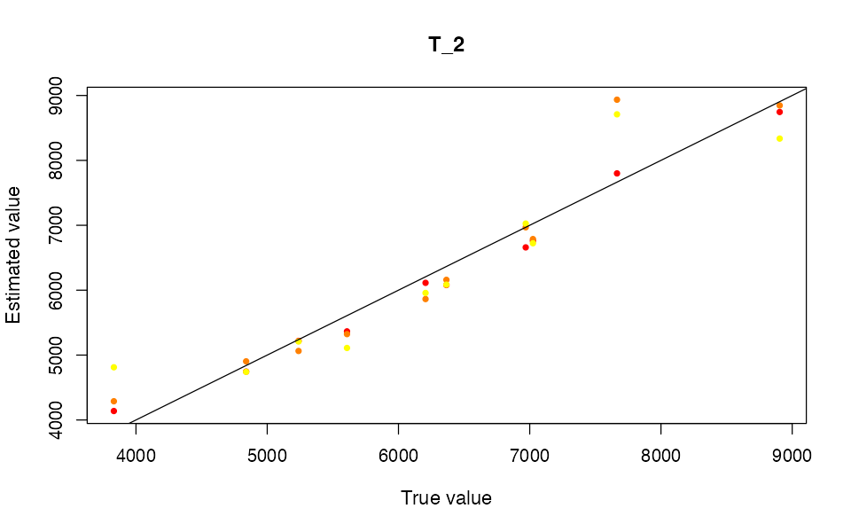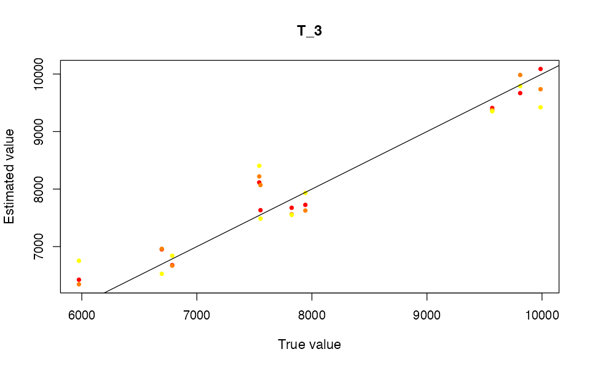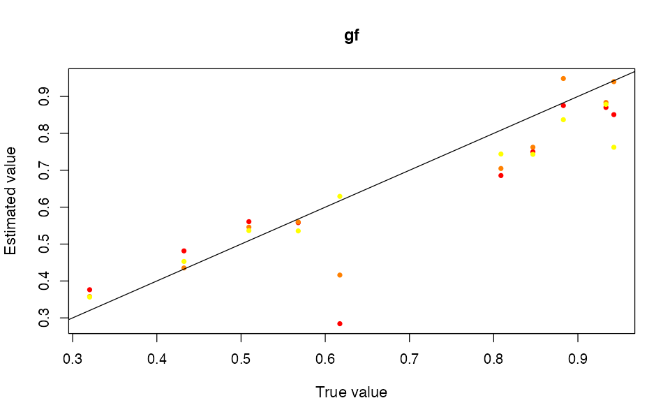 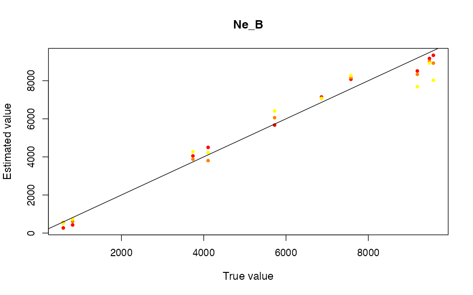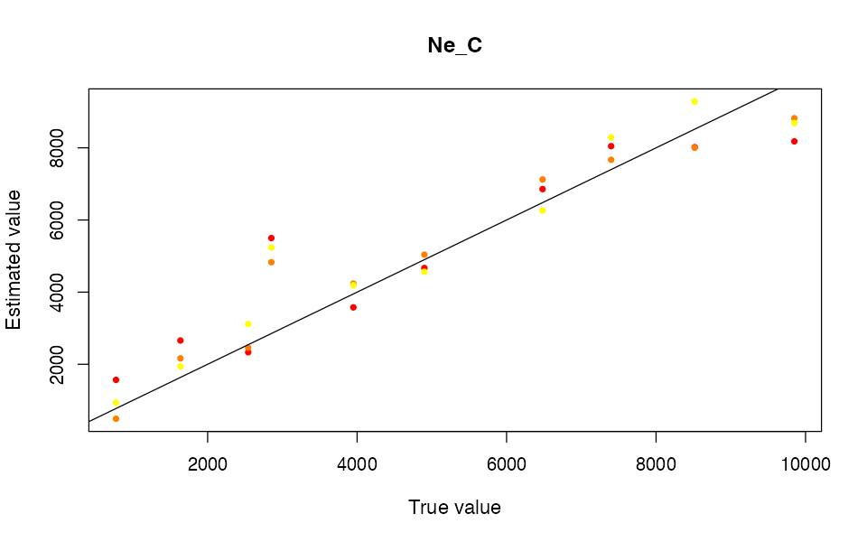
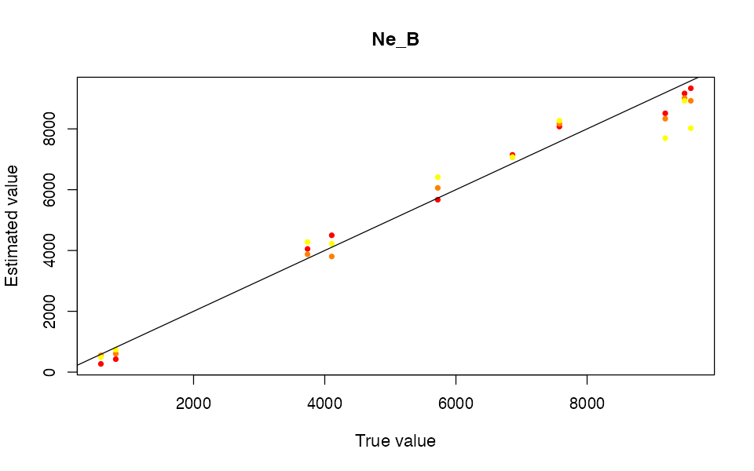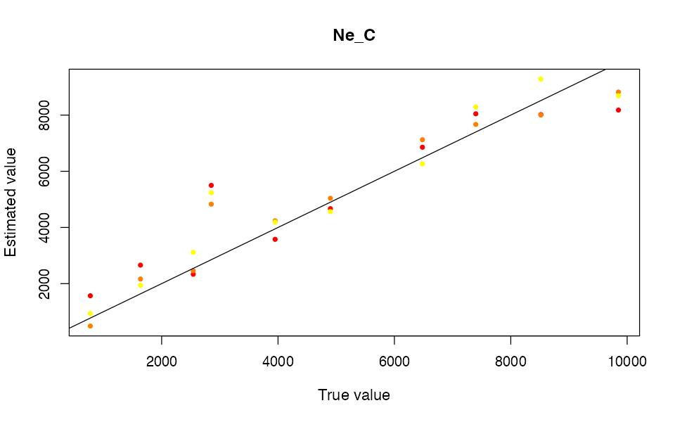
Parameter inference
Now we can finally estimate the model parameters from the model which
seems to explain data the best – modelX. Because we
simulated the data from a (hidden) true, known model, we will also
visualize the true parameter values as vertical dashed lines to compare
their values against the posterior distributions of all parameters.
abcX#> Call:
#> abc::abc(target = observed, param = data$parameters, sumstat = simulated,
#> tol = 0.01, method = "neuralnet")
#> Method:
#> Non-linear regression via neural networks
#> with correction for heteroscedasticity
#>
#> Parameters:
#> T_1, T_2, T_3, gf, Ne_A, Ne_B, Ne_C, Ne_D
#>
#> Statistics:
#> diversity_A, diversity_B, diversity_C, diversity_D, divergence_A_B, divergence_A_C, divergence_A_D, divergence_B_C, divergence_B_D, divergence_C_D, f4_A_B_C_D
#>
#> Total number of simulations 10000
#>
#> Number of accepted simulations: 100
extract_summary(abcX)#> Warning in density.default(x, weights = weights): Selecting bandwidth *not*
#> using 'weights'
#> Warning in density.default(x, weights = weights): Selecting bandwidth *not*
#> using 'weights'
#> Warning in density.default(x, weights = weights): Selecting bandwidth *not*
#> using 'weights'
#> Warning in density.default(x, weights = weights): Selecting bandwidth *not*
#> using 'weights'
#> Warning in density.default(x, weights = weights): Selecting bandwidth *not*
#> using 'weights'
#> Warning in density.default(x, weights = weights): Selecting bandwidth *not*
#> using 'weights'
#> Warning in density.default(x, weights = weights): Selecting bandwidth *not*
#> using 'weights'
#> Warning in density.default(x, weights = weights): Selecting bandwidth *not*
#> using 'weights'#> T_1 T_2 T_3 gf Ne_A
#> Min.: 1425.751 2833.185 6536.967 -0.32010183 144.1305
#> Weighted 2.5 % Perc.: 1526.555 4419.209 7007.975 -0.22652541 1233.2805
#> Weighted Median: 2147.892 5819.360 8448.530 0.11570250 2080.5055
#> Weighted Mean: 2129.747 5725.272 8419.426 0.13775215 2132.1050
#> Weighted Mode: 2217.754 5896.542 8424.752 0.09495957 1869.5472
#> Weighted 97.5 % Perc.: 2713.950 6413.442 9392.346 0.50254407 3204.0996
#> Max.: 3089.160 6721.522 9614.610 0.90031920 5063.1232
#> Ne_B Ne_C Ne_D
#> Min.: 304.7693 1550.589 -4883.706
#> Weighted 2.5 % Perc.: 364.2064 3934.065 -1714.943
#> Weighted Median: 853.8310 6922.173 2527.980
#> Weighted Mean: 879.6763 6788.551 2709.414
#> Weighted Mode: 873.5101 7258.315 2084.825
#> Weighted 97.5 % Perc.: 1527.3169 10811.460 7443.152
#> Max.: 1580.1703 11699.557 10902.648
plot_posterior(abcX, param = "T") +
geom_vline(xintercept = c(2000, 6000, 8000), linetype = "dashed")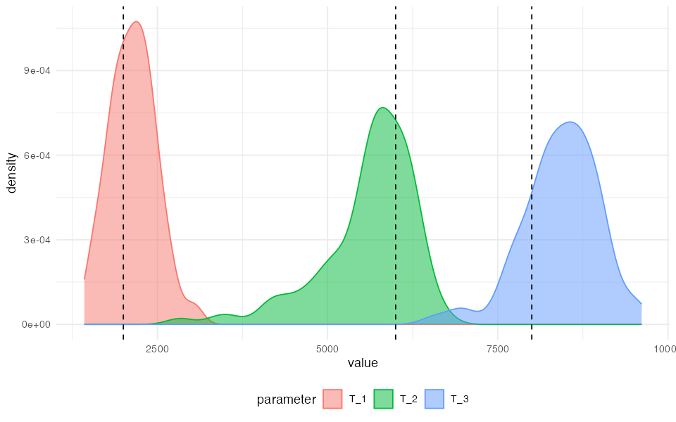
plot_posterior(abcX, param = "Ne") +
geom_vline(xintercept = c(2000, 800, 9000, 4000), linetype = "dashed")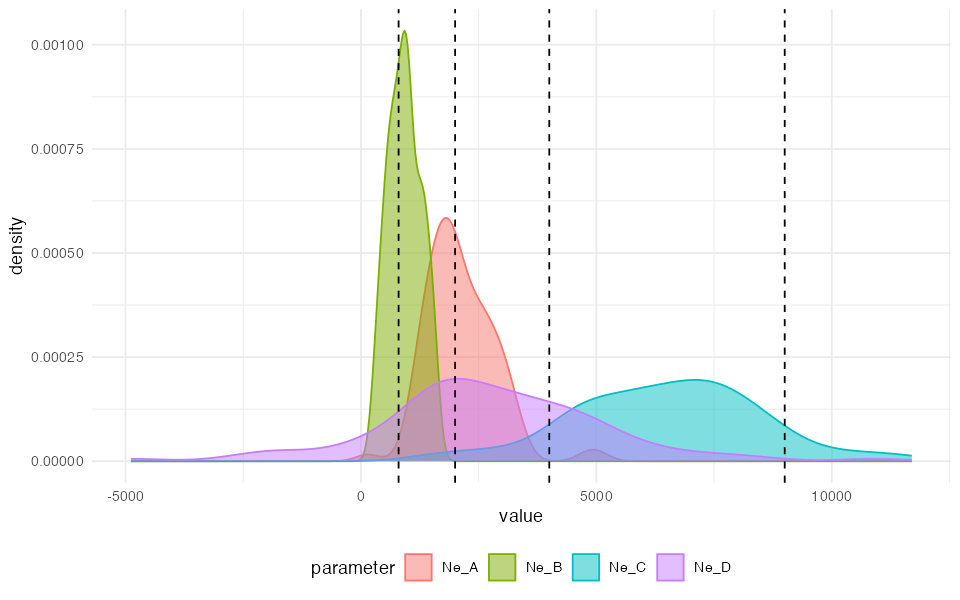
plot_posterior(abcX, param = "gf") +
geom_vline(xintercept = 0.1, linetype = "dashed") +
coord_cartesian(xlim = c(0, 1))Not bad, considering how few simulations we’ve thrown at the inference in order to save computational resources in this small vignette! We can see that the modes of the inferred posterior distributions of the model parameters (the colorful densities plotted above) line up pretty much perfectly with the true values (dashed vertical lines).
To make this concluding point even clearer (and also to demonstrate
the importance of the various validation procedures described above,
such as the posterior predictive checks!) let’s say that we weren’t
careful enough with model selection and simply assumed that the
structure of modelZ is the most appropriate model for our
data and used it for inference of the split time parameters instead.
This is complete non-sense and we show this purely for
demonstration purposes!
plot_posterior(abcZ, param = "T") +
geom_vline(xintercept = c(2000, 6000, 8000), linetype = "dashed")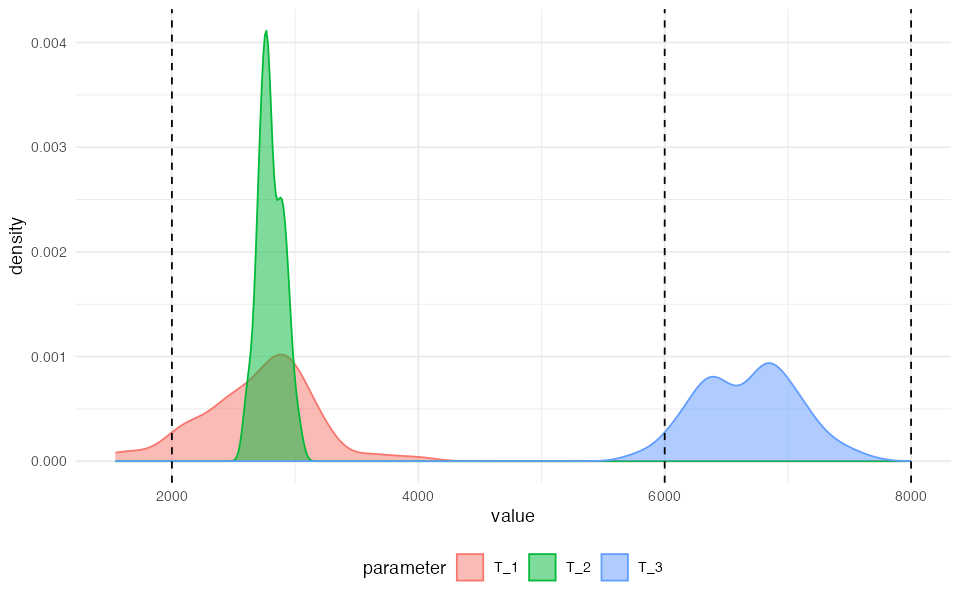
We can clearly see that posterior distributions inferred by ABC for this particular model completely failed to capture the true values.